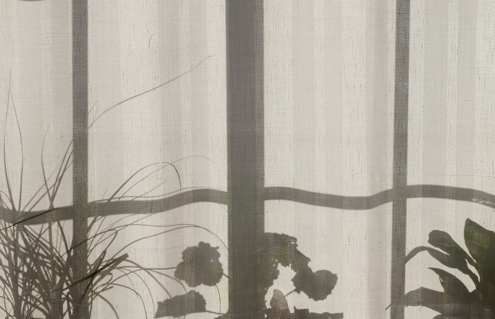
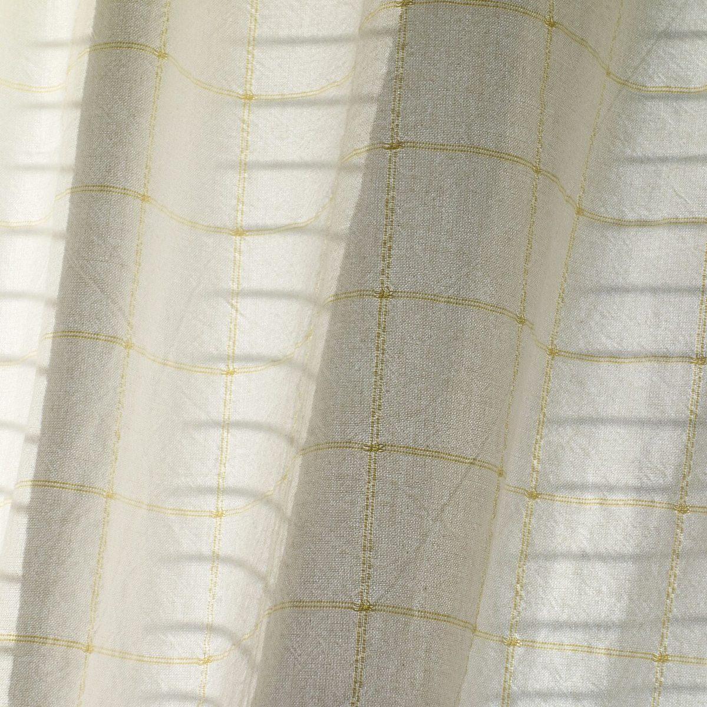

02/05割れ物
店のこと
お店について確認できているのは、所在地・電話番号・Instagramのアカウントです。
「想像してみる」部分は制作側の想像です。お店の実際の様子・考え・メニューとは関係がありません。
確認できていること
- 店名は「でずぼCafe」、業種はカフェ
- 所在地は山形県鶴岡市湯温海甲107(〒999-7204)
- 電話番号は 090-2367-4770(Googleマップ記載)
- Instagramは @dezubo_cafe
- 営業時間・定休日・メニュー・価格・ご予約・駐車場は準備中

想像してみる
割れ物の印から
由来は分かりません。制作側は「割れ物」の印から、器をひとつずつ大切に扱うお店かもしれない、と想像してみました。ただ、これは制作側の連想で、実際のお店の姿ではありません。


